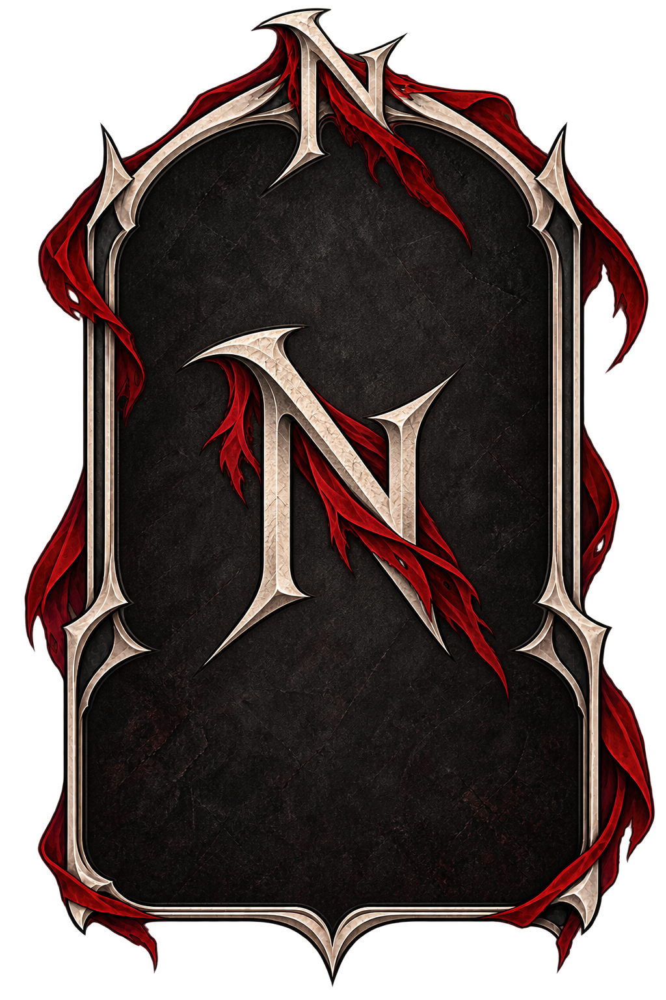

Kaéliss
La Primordiale du Sang
Kaéliss est l'une des Primordiales, détentrice de la Veine du Sang — Rang I, Cœur Immuable, le plus haut degré de maîtrise connu. À ce niveau, le sang est une extension de sa volonté. Elle peut survivre à presque toute blessure tant qu'une goutte de son sang demeure, régénérer son corps, rendre la vie aux mourants et contrôler le sang d'autrui.
Il y a plusieurs siècles, un empereur fit enfermer des milliers d'enfants dans les profondeurs de ses forteresses. Dans des cryptes dédiées aux anciens rites, ils servaient d'offrandes pour expérimenter Rituels et Pactes, dans l'espoir de reproduire le pouvoir des Veines.
Puis Kaéliss vint.
Elle entra seule dans la forteresse. À l'aube, les enfants étaient libres, les chaînes brisées et les salles rituelles couvertes du sang de ceux qui les avaient torturés. Nul ne sait ce qu'il advint de l'empereur, mais son empire ne survécut pas longtemps.
Les enfants sauvés transmirent son histoire à leurs descendants. Avec les siècles, Kaéliss devint plus qu'une Primordiale : un symbole de liberté, de vie et de vengeance.
Aujourd'hui, certains la prient comme une divinité.
La Mère des Libérés.
La Briseuse de Chaînes.
Kaéliss, Déesse du Sang.